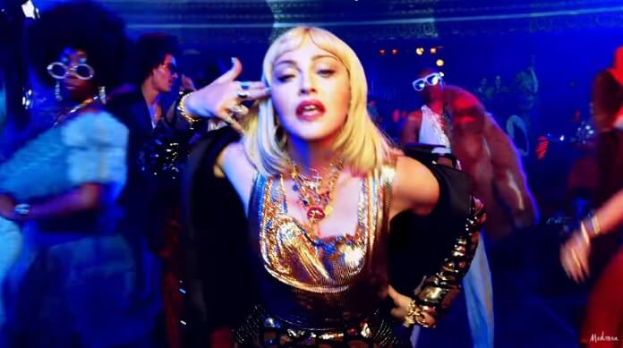

Madonna compartilha foto escandalosa de filha e 'amigo' em festa de Réveillon em família
Foco está no derrière de Lourdes Leon, cujo look deixa dúvida sobre uso de lingerie. Convidado não identificado faz careta e usa mão boba. Post no Instagram Stories da Rainha do Pop deu o que falar
E 2022 começa do mesmo jeito que terminou 2021. Com mais posts polêmicos de Madonna. Depois de passar os últimos dias do ano passado se digladiando com o Instagram por causa de fotos sensuais suas que foram censuradas pela plataforma, ela usou o Stories para um registro chocante da sua festa de Réveillon.
 O clique mostra a filha mais velha, Lourdes Leon, de 25 anos, com foco total no seu derrière, deixando dúvida sobre uso de lingerie por baixo do look branco. E também com um 'convidado misterioso' com mão boba e fazendo uma expressão que deixa qualquer legenda impublicável.
O clique mostra a filha mais velha, Lourdes Leon, de 25 anos, com foco total no seu derrière, deixando dúvida sobre uso de lingerie por baixo do look branco. E também com um 'convidado misterioso' com mão boba e fazendo uma expressão que deixa qualquer legenda impublicável.
Madonna acusa rapper de usar música sem autorização e esbraveja: “cansada”
Cantora diz que Tory Lanez copiou "Into The Groove", seu sucesso de 1985

Madonna está pronta para entrar em uma batalha judicial contra Tory Lanez.
A cantora está acusando o rapper de plagiar “Into the Groove”, seu hit de 1985, na canção “Pluto’s Last Comet”. Em um comunicado compartilhado com a Rolling Stone, a artista declarou:
Estou cansada de tirarem proveito de mim e agora falo sério.
A canção faz parte do último disco de Lanez, chamado Alone at Prom. O álbum é inspirado pela música dos anos 80, e o sintetizador da canção em questão é bastante parecido com o de “Into the Groove”. A cantora já havia apontado a semelhança em um post que fez no dia 22 de dezembro.
Madonna ainda não afirmou se vai mesmo levar o caso à justiça para pedir direitos autorais da faixa. Até o momento, Lanez também não se pronunciou sobre o assunto.
Madonna tem fotos derrubadas pelo Instagram e desabafa: "Censura e sexismo"
Madonna, de 63 anos, repostou nesta quinta-feira (25) sua última publicação do Instagram, derrubada pela plataforma. No carrossel, a cantora aparece nua coberta por lençol em algumas fotos e em outras com roupas sensuais. Segundo ela, a decisão do aplicativo de remover suas imagens foi devido ao mamilo aparecendo.
"Estou postando as fotos que o Instagram tirou do ar sem aviso ou notificação. O motivo pelo qual eles informaram à minha gerência - que não gerencia minha conta - é que uma pequena parte do meu mamilo foi exposta. Ainda é surpreendente para mim que vivamos em uma cultura que permite que cada centímetro do corpo de uma mulher seja mostrado, exceto um mamilo. Como se essa fosse a única parte da anatomia de uma mulher que pudesse ser sexualizada. O mamilo que nutre o bebê! Um mamilo de homem não pode ser visto como erótico?! E a bunda de uma mulher, que nunca é censurada em lugar nenhum?", desabafou a artista.
Veja as fotos clicando no link